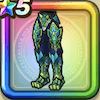

ドラゴンメイル下
攻略班 8.0点 / 麻痺耐性+5%ギガントドラゴンへの耐性+10%守備減耐性+10%斬撃・体技耐性+1%麻痺耐性+5%守備減耐性+10%【晴れ】ヒャド属性斬撃・体技ダメージ+3%【バトマス】スキルの体技ダメージ+2%ヒャド属性斬撃・体技ダメージ+6%
くわしい特徴
【レベル別習得スキル】 Lv1麻痺耐性+5% Lv3ギガントドラゴンへの耐性+10% Lv5守備減耐性+10% Lv8【晴れ】ヒャド属性斬撃・体技ダメージ+3% Lv10【バトマス】スキルの体技ダメージ+2% Lv12斬撃・体技耐性+1% Lv15ヒャド属性斬撃・体技ダメージ+6% Lv18麻痺耐性+5% Lv20きようさ+5 Lv23守備力+5 Lv25守備減耐性+10% 【限界突破スキル】 1凸攻撃力+7 2凸すばやさ+10 3凸守備力+5 4凸さいだいHP+10